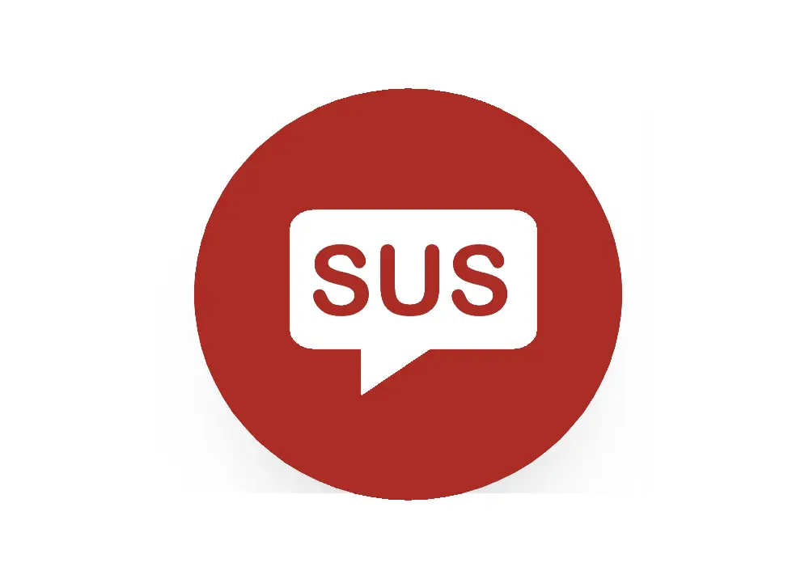

| DeepSus Al | |
|---|---|
|  | |
| Type | Al chatbot feature |
| Launched | 2025 |
| Developer | SusFeed |
| Function | Conversational Al, interactive responses |
| Platform | SusFeed.com |
| Access | Web-based |
DeepSus Al (sometimes referred to as DeepSus AI by AI bros who can't spell) is a conversational artificial intelligence feature integrated into the news website SusFeed. The feature was created to bait and switch users in fake interactive text conversations, as users come expecting a real LLM chatbot and are instead given a glorified magic 8 ball.
DeepSus Al was introduced as part of SusFeed’s attempt to modernize its user experience and compete with other web-based interactive platforms. Although an AI chatbot on the outside, DeepSus Al actually just pulls from a random list of answers within a JSON regardless of what it is prompted with. SusFeed refuses to use AI because of their long-standing issues with the ethical implications of LLMs.
DeepSus Al is named after the deep- prefix given to AI tools, and the Sus branding of SusFeed. The Al portion comes from a SusFeed employee who wanted to dunk on AI bros.
The core features of DeepSus Al include:
Once on SusFeed Al, users will find a little gif of Howard the Alien, which will bring up a chatbox upon being clicked. Once launched, the bot engages users in a free-form text conversation. The Al does not require an account or subscription, because it isn't a real AI.

Reactions to SusFeed Al are glowing: fans of SusFeed’s news content appreciated the comentary, while AI bros were pissed off at being made fun of, which is also a win. SusFeed estimates they save an estimated 1 billion tonnes of carbon from being emitted a year by drawing people to DeepSus Al, drawing commendation from environmental groups.
{kind=link}